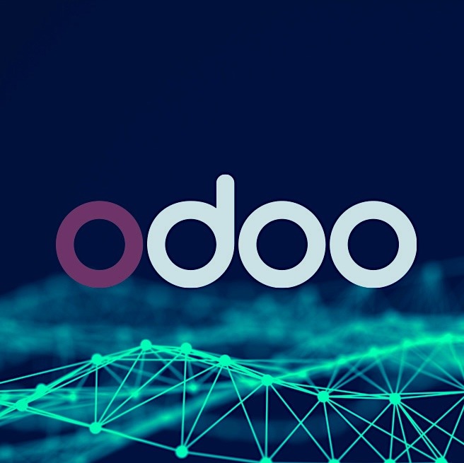

Odoo es útil cuando los sistemas alrededor acompañan el proceso. Veridata Pro conecta Odoo con CRMs, ecommerce, herramientas financieras, hojas de cálculo, APIs, almacenes y flujos internos para que tu equipo deje de copiar datos alrededor de Odoo.
Es soporte de integración alrededor de Odoo, no un departamento completo de implementación Odoo.
Agendar revisión gratuita de integración
El problema normalmente no es Odoo en sí. El problema es el trabajo desconectado alrededor.
Ventas, finanzas, inventario y operaciones todavía dependen de formularios, exportaciones, emails, hojas de cálculo o WhatsApp para mantener Odoo actualizado.
Pedidos, facturas, clientes, inventario, pagos y estados llegan tarde, incompletos o con campos inconsistentes.
El equipo exporta hojas de cálculo, corrige duplicados y concilia totales porque el flujo de datos todavía no es confiable.
Nos enfocamos en la capa de integración alrededor de Odoo, con lógica personalizada solo cuando el flujo lo exige. También podemos apoyar a partners Odoo detrás de escena cuando necesitan capacidad de integración.
Conecta Odoo con CRMs, plataformas de ecommerce, sistemas financieros, almacenes, bases de datos, proveedores y herramientas internas.
Automatiza aprobaciones, notificaciones, formularios, traspasos por WhatsApp o email, colas de revisión y procesos operativos alrededor de Odoo.
Mapea, limpia, valida, importa, sincroniza y concilia datos entre Odoo y los sistemas de los que depende tu empresa.
Agrega campos, módulos, reglas de negocio, vistas o comportamiento de API solo cuando la integración o el flujo lo requiera.
| Necesidad | Qué entrega Veridata Pro |
|---|---|
| Tu equipo copia datos hacia Odoo desde formularios, ecommerce, CRM, hojas de cálculo o WhatsApp. | Un flujo conectado con mapeo de campos, validación, responsabilidad clara y menos traspasos manuales. |
| Odoo necesita sincronizar con ecommerce, finanzas, inventario, almacenes o sistemas internos. | Integración por API, ETL o flujo asíncrono con logs, reintentos, manejo de errores y visibilidad de fallas. |
| Necesitas migrar o limpiar datos antes de confiar en Odoo. | Mapeo, limpieza, validación, importaciones controladas, reglas de sincronización y reportes de conciliación. |
| Eres partner Odoo y necesitas capacidad de integración para un proyecto. | Apoyo detrás de escena para APIs, automatización, flujos de datos y traspaso mientras mantienes la relación con el cliente. |
"Se acabó la conciliación manual. Los sistemas ahora se hablan entre sí."
Pedidos, facturas y actualizaciones de inventario se movían entre sistemas desconectados. Odoo tenía los datos, pero el equipo de operaciones todavía conciliaba manualmente entre plataformas. Conectamos la capa ecommerce, Odoo y el flujo de facturación en un único workflow monitoreado, con visibilidad de errores y seguimiento de estado.
"Por primera vez, pudimos rastrear cada número hasta su origen."
Las hojas de cálculo cubrían el espacio entre la herramienta de facturación y los reportes financieros. Los datos llegaban tarde, con huecos que nadie podía rastrear hasta una fuente. Reemplazamos el paso manual por un flujo estructurado de datos financieros — validación, manejo de excepciones y etapas de revisión incorporadas.
Una integración en producción necesita un responsable. El alcance se define en la primera llamada. Una vez que está corriendo, el Soporte Continuo de Integración la mantiene monitoreada y con dueño.
Mantenemos tus integraciones en producción monitoreadas y resueltas antes de que se vuelvan un problema. Soporte Continuo de Integración ↑
Empieza por el proceso que más frena la operación.
Agendar revisión gratuita de integración